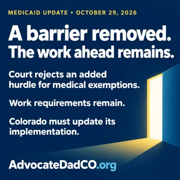

Medicaid & accountability
· Rob Harris
A barrier removed. The work ahead remains.
What the October 29 Medicaid medical-frailty ruling changes, what remains, and why Colorado implementation matters for families.
Read the Medicaid ruling article